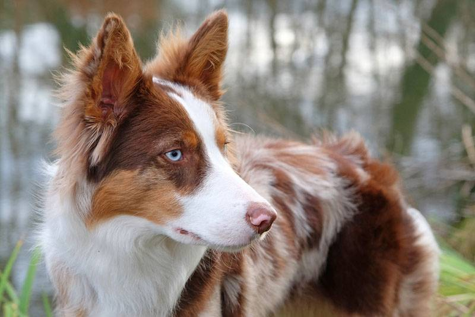

Ха́ски (англ. Husky) — общее название для нескольких пород ездовых собак, выведенных в северных регионах, которые отличаются манерой быстро тянуть упряжку.[1] Они представляют собой постоянно меняющуюся помесь из самых быстрых собак. Аляскинский маламут, напротив, является самой крупной и самой мощной ездовой собакой, и использовался для более тяжёлых нагрузок. Хотя доставка грузов и людей при помощи собачьих упряжек во многом ушла в историю, в последние годы многие компании предлагают туристам прокатиться на собачьих упряжках в заснеженных регионах.[2] Хаски сегодня содержат как домашних животных[3]

